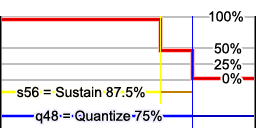

Tool: Music Converter
Current Version: 1.3 (Released with PokeMini 0.5.5)
Convert music sheets to a data format that can be used with pm_music library
Command-Line
Usage: pokemini_musicconv [options] -asmf Output in asm format (def) -cf Output in C format -i music.txt Music input (required) -o music.asm Output file -oh music.inc Output header file -vh music Set prefix for header definitions -q Quiet -v Verbose -sv Super-verbose -play varname Play specific BGM/SFX Play flags: -snddirect Sound Engine: Direct (def) -sndemulated Sound Engine: Emulated -piezo Use piezo filtering (def) -nopiezo Don't use piezo filtering -towav music.wav Save to WAV while playing
Music sheet format
Notes
// can be used for single-line comments
/* and */ are used for multi-line comments
{ and } can be used to brace content
Numbers can have $ or 0x prefix for hexadecimal notation
PokeMini Music converter specify "s" and "q" to work as:

Figure 1 - How Quantize and Sustain affects volume output
Using SHORTQ=yes allow quantize to meet the standard modern MML but sustain must still be specified.
Directives
| Directive Name | Description |
|---|---|
| INCLUDE anothersheet.txt | Include another file |
| TITLE sheet title | Title of the music sheet |
| COMPOSER composer name | Composer name |
| PROGRAMMER programmer name | Programmer name |
| DESCRIPTION description about this | Extra description |
| OUTFORMAT asm OUTFORMAT c |
Set output format Overrides "-asmf" / "-cf" option |
| VARHEADER header.inc VARHEADER |
Set variable name (prefix) for definitions in the header Overrides "-vh" |
| OUTHEADER header.inc OUTHEADER |
Set output header filename, don't write filename to disable header writing Overrides "-oh" |
| OUTFILE music.asm OUTFILE |
Set output filename, don't write filename to disable output wiriting Overrides "-o" |
| MTIME $00FF MASTERTIME $00FF |
Master time (In Timer 2 Preset at Prescale 6, CPU / 1024) |
| MBPM 114, 128 MASTERBPM 114, 128 |
Master time in beats-per-minute in 4/4 format for certain wait value |
| VOLLVL mml VOLLEVEL mml |
Volume level: mml = 0 to 15 system = 0 to 3 |
| OCTREV no OCTAVEREV no |
Reverse octave signs in MML no = Decrease octave is < and Increase octave is > yes = Decrease octave is > and Increase octave is < |
| SHORTQ no SHORTQUANTIZE no |
Use shorter quantize/sustain range in MML no = Range of 'q' and 's' commands is 0 to 64 yes = Range of 'q' and 's' commands is 0 to 8 |
| BGM varname <pattern-list> | Define Background music |
| PAT_T varname <trk-data> PAT_TRACK varname <trk-data> PATTERN_T varname <trk-data> PATTERN_TRACK varname <trk-data> |
Define Pattern (Track syntax) |
| SFX_T varname <trk-data> SFX_TRACK varname <trk-data> |
Define Sound effect (Track syntax) |
| MACRO_T uppercase-letter <trk-data> MACRO_TRACK uppercase-letter <trk-data> |
Define Macro (Track syntax) |
| PAT varname <mml-data> PATTERN varname <mml-data> |
Define Pattern (MML syntax) |
| SFX varname <mml-data> | Define Sound effect (MML syntax) |
| MACRO uppercase-letter <mml-data> | Define Macro (MML syntax) |
Pattern List <pattern-list>
Syntax: varname varname ...
varname is a name of an existing pattern
Each pattern must be separated by spaces, tabs or new-lines
Loop can be marked with a | (pipe) character between spaces, this will cause to loop from the | (pipe) to end infinitely
( e.g. BGM testmusic { start_pattern | looping_pattern } )
Track data <trk-data>
Data is case-insensitive: A is the same as a
-- Insert row --
Define a row
Syntax:
ROW {cmd}, {cmd}... {\n}
Default: w24 v15 %128 q64 s64 xt1 xd
| {cmd} | Description |
|---|---|
| Cn, C-n | Set note: C, D, E, F, G, A or B n is octave number between 1 and 9 |
| C#n, C+n | Set note: C, D, E, F, G, A or B (sharp) n is octave number between 1 and 9 |
| %n | Set pulse-width n is between 0 to 255, ex. 128 = 50% (Square) |
| vn | Set volume n is 0 to 16, ex. 8 = 50% (VOLLVL=mml) n is 0 to 3, ex. 2 = 50% (VOLLVL=system) |
| wn | Set number of ticks to wait n is between 1 to 255 |
| !n:d | Write to RAM n is relative address between 0 to 255 d is data to write (8-bits) |
| qn | Set quantization (gating) |
| sn | Set sustain n is 0 to 64, ex. 32 = 50% (SHORTQ=no) n is 0 to 8, ex. 4 = 50% (SHORTQ=yes) |
| xtn | Set effect ticks Lower number provide better quality but will use more data |
| xd | Disable effects |
| xan:m | Arpeggio effect (only 1 effect can be used at a time) n is the offset of the 2nd note m is the offset of the 3rd note ticks will affect the speed of arpeggio |
| xpn | Portamento effect (only 1 effect can be used at a time) n is the offset of the note to slide ticks will affect aliasing of the tone |
| xsn | Set random seed number n is a 32-bits seed number |
| xrn | Random frequencies effect (only 1 effect can be used at a time) n is the range of the note to generate random tones ticks will affect aliasing of the tone |
-- End Sound --
End BGM/SFX playback
Syntax:
END
-- Start Loop --
Start loop, can go 3 level depth
Syntax:
LOOP
MARK
DO
-- End Loop --
End loop, can go 3 level depth
Syntax:
ENDL {loopnum}
ENDLOOP {loopnum}
REPEAT {loopnum}
loopnum - number of loops, between 1 and 255
-- Use Macro --
Use defined macro, macro must be declared before using it
Syntax:
MACRO {uppercase-letter}
uppercase-letter - Single uppercase letter
MML data <mml-data>
Data is case-sensitive: A is different than a
Syntax: {mml}{mml}...
Default: w24 l4 v15 o5 %128 q64 s64 xt1 xd
Spaces and Tabs are ignored between each mml command
| {mml} | Description |
|---|---|
| ; | End sound |
| [ | Start loop |
| ] | End loop This will loop 1 time only |
| ]n | End loop n is number of times the sequence is played, 1 to 256 |
| c[n] | Play note: c, d, e, f, g, a or b n is length of note (optional), sufix of . or .. will expand note to 1.5% and 1.75% respectively |
| c-[n] | Play note: c, d, e, f, g, a or b (Flat) n is length of note (optional), sufix of . or .. will expand note to 1.5% and 1.75% respectively |
| c+[n], c#[n] | Play note: c, d, e, f, g, a or b (Sharp) n is length of note (optional) sufix of . or .. will expand note to 1.5% and 1.75% respectively |
| r[n] | Rest / Silence n is length of rest (optional) sufix of . or .. will expand note to 1.5% and 1.75% respectively |
| %n | Set pulse-width n is between 0 to 255, ex. 128 = 50% (Square) |
| \n /n |
Set pulse-width in percentage n is between 0 to 100, ex. 50 = 50% (Square) |
| vn | Set volume n is 0 to 16, ex. 8 = 50% (VOLLVL=mml) n is 0 to 3, ex. 2 = 50% (VOLLVL=system) |
| wn | Set number of ticks to wait on a whole length n is between 1 to 255 |
| !n:d | Write to RAM n is relative address between 0 to 255 d is data to write (8-bits) |
| ln | Set length n is between 1 to 64, 1 = whole, 2 = half, 4 = quarter... |
| A, B, C, D... | Insert macro, upper-case alphabetic letter |
| < | Decrease octave |
| > | Increase octave |
| on | Set octave n is between 1 to 9 |
| qn | Set quantization (gating) |
| sn | Set sustain n is 0 to 64, ex. 32 = 50% (SHORTQ=no) n is 0 to 8, ex. 4 = 50% (SHORTQ=yes) |
| xtn | Set effect ticks Lower number provide better quality but will use more data |
| xd | Disable effects |
| xan:m | Arpeggio effect (only 1 effect can be used at a time) n is the offset of the 2nd note m is the offset of the 3rd note ticks will affect the speed of arpeggio |
| xpn | Portamento effect (only 1 effect can be used at a time) n is the offset of the note to slide ticks will affect aliasing of the tone |
| xsn | Set random seed number n is a 32-bits seed number |
| xrn | Random frequencies effect (only 1 effect can be used at a time) n is the range of the note to generate random tones ticks will affect aliasing of the tone |
Example
TITLE Pokemon-Mini Intro COMPOSER Nintendo PROGRAMMER JustBurn DESCRIPTION Intro played when starting any commercial game MTIME $00FF BGM bgm_pmintro { bgm_pmintro_p0 } PAT bgm_pmintro_pat { // This version works with any MML player o6 l6 v15e v8e v15a v8a r3 > v15d v8d v15c+ v8c+ < v15a v8a > v15e v8e r1 v15 l8 d a > e b e b r4 ; } PAT bgm_pmintro_p0 { /* Same as bgm_pmintro_pat */ o6 l3 s32 e a r >d c+ <a >e r1 s64 l8 d a >e b e b r4 } PAT_T bgm_pmintro_p0t { /* Same as bgm_pmintro_pat */ ROW w4, v15, %$80, E-5 ROW w4, v8 ROW w4, v15, %$80, A-5 ROW w4, v8 ROW w9, v0 ROW w4, v15, %$80, D-6 ROW w4, v8 ROW w4, v15, %$80, C#6 ROW w4, v8 ROW w4, v15, %$80, A-5 ROW w4, v8 ROW w4, v15, %$80, E-6 ROW w4, v8 ROW w24, v0 ROW w3, v15, %$80, D-6 ROW w3, v15, %$80, A-6 ROW w3, v15, %$80, E-7 ROW w3, v15, %$80, B-7 ROW w3, v15, %$80, E-7 ROW w3, v15, %$80, B-7 ROW w6, v0 END }